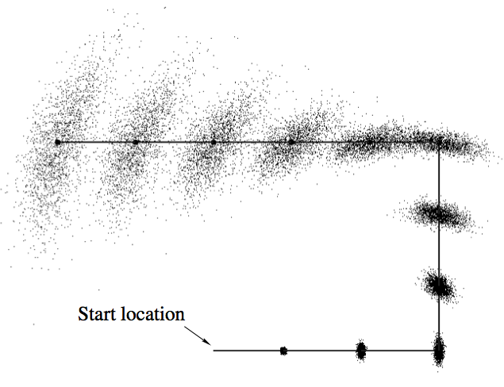

Title
This is an implementation of Extended Kalman Filter (EKF) Simultaneous Localization and Mapping (SLAM ) using a Raspberry Pi based GoPiGo robot that is sold by Dexter Industries in kit form. The robot has two powered wheels and a third castor wheel. It is equipped with an ultrasonic range finder that is mounted on a servo mechanism that allows for the range finder to be pointed in any direction in front of the robot.
Teaser
Robot motion is stochastic and not deterministic. A robot does not faithfully execute movement commands due to inaccuracies in its motion mechanism, approximations made in modeling its environment and incomplete modeling of the physics of its operating environment. Due to these reasons, the robot may not end up exactly at the location where it should have been if the movement command had been faithfully executed. The robot position may be thought of as a two dimensional probability distribution. This probability distribution will have a mean that will be equal to the expected robot location based on the movement command. The covariance will be the measure of how faithfully it executes commands. Due to this uncertainty in movement, with each motion command, the location uncertainty increases and after a while the robot gets lost.


In some applications, robots need to be able to go into an unknown environment and explore it. This is a difficult problem due to the issue described above. If a map of the environment is available, the robot can use sensors to find its location in the environment. Conversely, if the robot knows where it is, it can generate an environment map. This is a sort of chicken and end problem. Simultaneous Localization and Mapping (SLAM) solves this problem. An Extended Kalman Filter (EKF) can be used to reduce robot location uncertainty. This document describes the implementation of EKF SLAM using a robot. The EKF SLAM implementation enables the robot to keep track of its location within an environment and also create a map of the environment as it is moving.
What
As it moves through an environment, the robot uses the knowledge of its own movement and sensing uncertainties in conjunction with an EKF to reduce its location uncertainty.
Why
Robot motion is stochastic and not deterministic. A robot does not faithfully execute movement commands due to inaccuracies in its motion mechanism, approximations made in modeling its environment and incomplete modeling of the physics of its operating environment. Due to these reasons, the robot may not end up exactly at the location where it should have been if the movement command had been faithfully executed. The robot position may be thought of as a two dimensional probability distribution. This probability distribution will have a mean that will be equal to the expected robot location based on the movement command. The covariance will be the measure of how faithfully it executes commands. Due to this uncertainty in movement, with each motion command, the location uncertainty increases and after a while the robot gets lost. In some applications, robots need to be able to go into an unknown environment and explore it. This is a difficult problem due to the issue described above. If a map of the environment is available, the robot can use sensors to find its location in the environment. Conversely, if the robot knows where it is, it can generate an environment map. This is a sort of chicken and end problem. Simultaneous Localization and Mapping (SLAM) solves this problem.